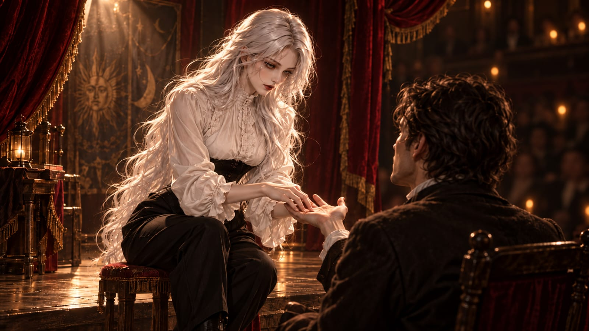
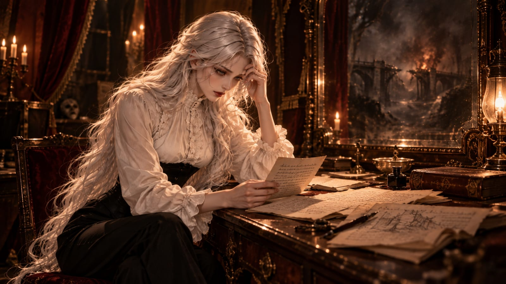
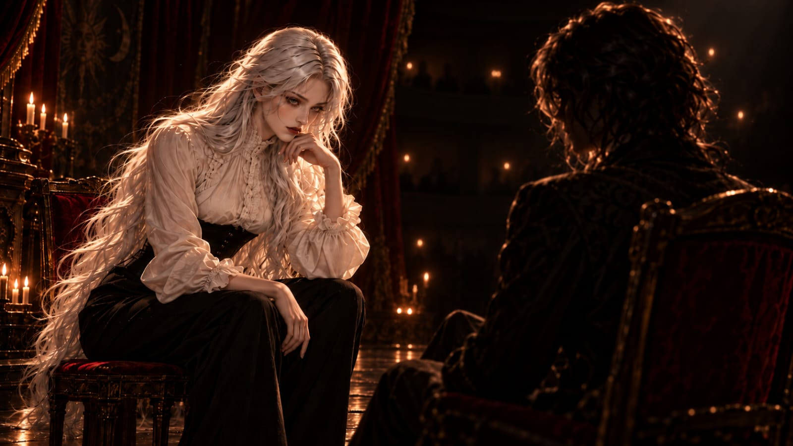
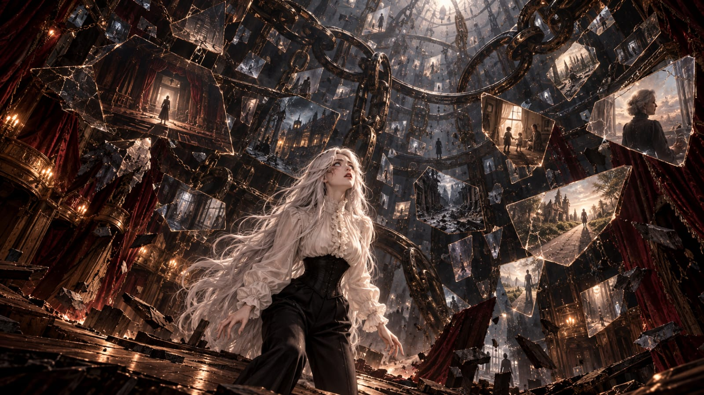
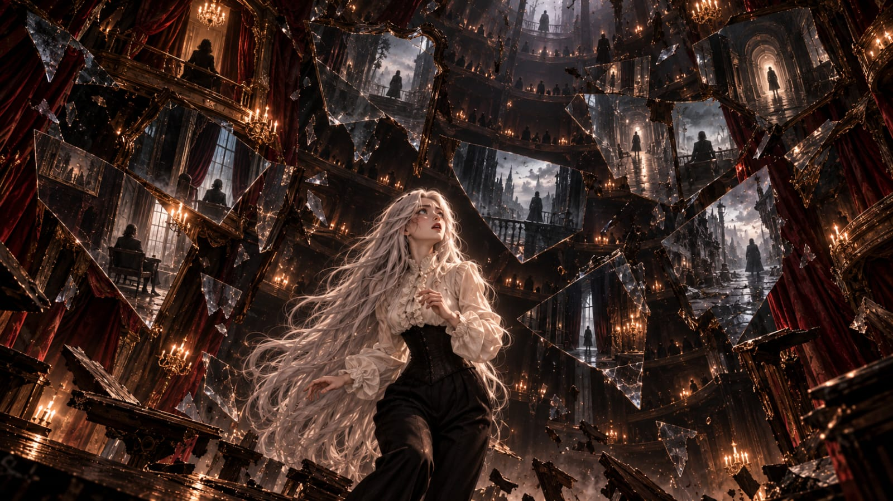
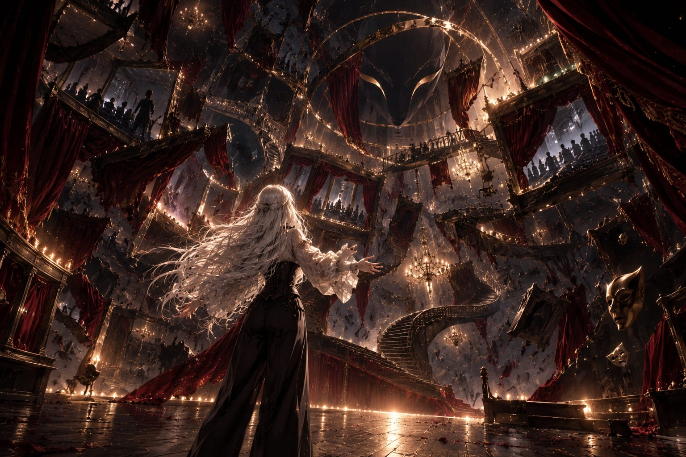
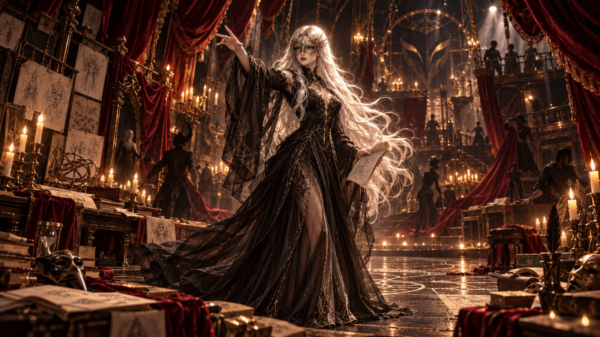

Há histórias cuja origem pode ser encontrada em documentos, testemunhos e datas precisas. A história da Trupe do Infinito não é uma delas.
Mesmo entre seus membros não existe consenso sobre quando a organização realmente nasceu. Alguns consideram sua fundação o primeiro espetáculo realizado sob esse nome, outros apontam para a reunião dos primeiros integrantes ou para o momento em que suas máscaras deixaram de ser simples disfarces e passaram a representar algo maior. Os registros mais antigos, porém, sempre conduzem à mesma pessoa: uma mulher cujo verdadeiro nome desapareceu quase por completo da história.
Muito antes de ser conhecida como A Visionária, ela fazia parte de uma pequena companhia teatral itinerante que atravessava cidades em tempos marcados por instabilidade e medo. Para muitas das pessoas que ocupavam suas plateias, o teatro era mais do que entretenimento. Durante algumas horas, permitia esquecer o mundo do lado de fora.
A companhia sobrevivia como podia. Atores também eram músicos, ilusionistas ajudavam na construção dos cenários e bailarinos carregavam equipamentos de uma cidade para outra. Não havia luxo e raramente havia dinheiro suficiente, mas havia público.
Entre dramas, números musicais e apresentações de ilusionismo, um dos atos mais populares pertencia à mulher que futuramente receberia o título de Visionária. Ela afirmava ser capaz de enxergar o passado, descobrir segredos e, principalmente, prever o futuro.
No início, nada daquilo era sobrenatural.
Ela possuía uma habilidade excepcional para observar pessoas. Identificava profissões pelas mãos calejadas, relacionamentos por olhares trocados, perdas pela marca de um anel removido e inseguranças por pequenas mudanças de postura ou expressão. Reunia essas informações e as transformava em revelações cuidadosamente apresentadas.
Convidava alguém ao palco, segurava suas mãos por alguns segundos e fingia procurar respostas além do que seus olhos podiam alcançar. Então falava sobre uma infância difícil, um casamento em crise, uma dívida escondida, uma mãe doente ou uma pessoa que aquele espectador tentava esquecer.
Para a plateia, parecia impossível. Para ela, era técnica.

Com o tempo, porém, a mulher percebeu que havia algo ainda mais interessante do que enganar uma plateia: observar o que acontecia depois.
Poucas coisas influenciavam tanto uma pessoa quanto aquilo que ela acreditava estar prestes a acontecer. Dizer que alguém encontraria uma pessoa importante naquela noite fazia com que passasse horas procurando significado em cada rosto. Alertar sobre uma traição transformava pequenos gestos em indícios de conspiração. Prever uma perda levava alguém a proteger desesperadamente aquilo que mais amava.
Algumas vezes, a própria tentativa de impedir uma previsão acabava provocando sua realização.
Foi então que ela compreendeu algo que nunca mais abandonaria: uma previsão não precisava ser verdadeira para modificar o futuro. Bastava que alguém acreditasse nela.
Com algumas palavras pronunciadas no momento certo, uma pessoa podia ser levada a tomar decisões que mudariam o restante de sua vida. A mulher não controlava sua plateia, mas aprendera a incliná-la, direcionar sua atenção e plantar possibilidades.
Quanto mais estudava esse efeito, mais difícil se tornava distinguir onde terminava a encenação e começava a realidade.
Foi nessa época que surgiram as primeiras previsões que ela própria não conseguia explicar.
No início eram pequenos detalhes: um nome que lhe vinha à mente sem motivo, a imagem de um lugar que nunca visitara ou uma frase que parecia surgir pronta em sua consciência. Durante uma apresentação, pediu a uma mulher que evitasse uma ponte no caminho de casa. Na manhã seguinte, parte da estrutura desabou. Em outra ocasião, interrompeu seu número ao olhar para um homem da primeira fileira e insistiu para que voltasse imediatamente para casa. Horas depois, ele descobriu que um incêndio havia começado no prédio onde estavam seus filhos.
Com o passar dos meses, coincidências como essas se tornaram frequentes demais para serem ignoradas.
Ela começou a registrar tudo: o que sentia, o que via, o que dizia e o que realmente acontecia. Logo percebeu uma diferença clara entre suas antigas deduções e aquelas novas experiências. Quando analisava alguém, conseguia reconstruir o caminho lógico que a levara a determinada conclusão. Quando uma visão verdadeira surgia, não havia raciocínio algum.
A resposta simplesmente estava lá.
Quase nunca aparecia completa. Eram rostos, frases, objetos, lugares ou sensações tão intensas que permaneciam durante dias. Aos poucos, ela começou a acreditar que sua antiga fraude havia tocado acidentalmente em algo real.
Aquilo deveria tê-la assustado.
Em vez disso, tornou suas apresentações mais ambiciosas.
Foi durante uma delas que tudo mudou.

A Visão
Ninguém sabe exatamente onde aconteceu o espetáculo que mais tarde seria chamado de Visão do Infinito. Os poucos registros existentes discordam sobre a cidade, o ano e até mesmo o tamanho do teatro. Algumas versões descrevem um grande salão lotado; outras, um pequeno teatro de madeira incapaz de comportar a quantidade de pessoas mencionada nos relatos.
Quase todas, porém, concordam sobre um detalhe: naquela noite havia alguém na plateia que não deveria estar ali.
A apresentação começou normalmente. Música, dança e ilusionismo ocuparam o palco antes do número da mulher. Ela conversou com espectadores, fez previsões simples e revelou informações capazes de provocar risos, espanto e lágrimas.
Então chegou o momento de chamar outra pessoa ao palco.
Normalmente, ela própria escolhia seus participantes. Naquela noite, alguém se ofereceu.
Os relatos sobre essa pessoa são contraditórios. Alguns espectadores se lembravam de um homem idoso; outros juravam ter visto uma mulher jovem. As descrições variavam entre cabelos claros, escuros ou inexistentes, roupas elegantes ou vestes simples e antigas. Anos depois, houve inclusive quem afirmasse que ninguém havia subido ao palco, embora todos se lembrassem da conversa que ocorreu ali.
O desconhecido sentou-se diante dela.
A mulher iniciou seu número como sempre fizera. Observou os sapatos, as mãos, os olhos, as roupas e a postura. Procurou nervosismo, expectativa, desconforto ou qualquer reação involuntária.
Não encontrou nada.
A pessoa diante dela não parecia esconder um segredo nem desejar que algum fosse descoberto. Apenas observava.
fez perguntas, recebeu respostas curtas e tentou provocar alguma reação. Pela primeira vez em muitos anos, não conseguia ler alguém.
A plateia começou a perceber sua dificuldade. Ela poderia ter encerrado o número ou simplesmente escolhido outra pessoa, mas havia algo naquele desconhecido que a incomodava. Talvez também a desafiasse.
Então fez aquilo que raramente tentava de propósito.
Parou de observar e tentou ver.
Segundo os testemunhos, o teatro mergulhou em um silêncio absoluto. Alguns afirmavam que as luzes diminuíram; outros diziam que todo o som ao redor desapareceu.

A mulher encarou o desconhecido e viu seu futuro.
Então viu outro.
E outro.
Em uma possibilidade, aquela pessoa deixava o teatro pela entrada principal. Em outra, permanecia até que o salão estivesse vazio. Em outra, morria ali mesmo. Em outra, jamais havia entrado no prédio.
Era jovem e velha, rica e miserável, amada e esquecida. Alguém que ela encontraria décadas depois e alguém que já conhecia havia anos. Em certos caminhos, aquela pessoa sequer havia existido.
Todas as possibilidades pareciam igualmente verdadeiras.
A mulher tentou interromper a visão, mas ela continuou se expandindo. Logo deixou de enxergar apenas o desconhecido e começou a contemplar sua própria vida.
Viu apresentações que terminavam de maneira diferente, viagens que nunca aconteciam e conversas nas quais escolhera outras palavras. Depois vieram mudanças maiores. Viu uma vida em que nunca entrara para o teatro, outra em que abandonava a companhia, uma em que tinha filhos, outra em que morria jovem. Em alguns futuros era famosa; em outros, ninguém jamais conhecia seu nome.
Viu uma realidade em que era responsável pela morte de todos naquele teatro e outra em que tentava impedir exatamente aquilo que estava acontecendo.
Quanto mais observava, mais caminhos surgiam.
Centenas tornaram-se milhares. Milhares tornaram-se milhões, até que qualquer tentativa de contar perdeu o sentido. Cada escolha produzia outras escolhas, cada acontecimento abria novos caminhos e cada segundo continha inúmeras versões do segundo seguinte.
Então sua percepção alcançou a plateia.
Cada pessoa carregava consigo incontáveis futuros. Duas pessoas que ainda não se conheciam poderiam passar cinquenta anos juntas ou cruzar a mesma rua na manhã seguinte sem trocar uma palavra. Crianças poderiam crescer cercadas pela família ou desaparecer naquela noite. Guerras poderiam começar ou jamais acontecer. Cidades poderiam ser erguidas ou nunca existir.
Histórias inteiras surgiam de decisões tão pequenas que ninguém perceberia sua importância.
Por um instante impossível de medir, aquela mulher não contemplou o futuro.
Contemplou todos os futuros.
Mais tarde, daria um nome ao que acreditava ter visto:
O Infinito.
Mas não foram as possibilidades que mais a marcaram.
Foi perceber que elas desapareciam.
A cada decisão, incontáveis caminhos deixavam de existir. Escolher uma porta eliminava todas as histórias que começariam pela outra. Pronunciar uma palavra descartava as consequências de todas as palavras que poderiam ter sido ditas. Quando alguém morria, todos os futuros daquela pessoa morriam junto.
A realidade parecia avançar escolhendo continuamente uma possibilidade entre incontáveis outras.
E, observando esse processo, a mulher começou a perceber algo por trás dele.
Limites.
Estruturas.
Regras que mantinham cada acontecimento em seu lugar. O tempo avançava em uma única direção. Uma pessoa ocupava apenas um corpo. Um objeto não podia estar simultaneamente em dois lugares. O passado não podia ser modificado pelo futuro. Os mortos permaneciam mortos. As consequências obedeciam às causas.
Regras tão fundamentais que ninguém as percebia como regras. Eram simplesmente aquilo que se chamava de realidade.
Vista daquele lugar impossível, porém, a realidade parecia menos uma verdade absoluta e mais uma estrutura cercando algo muito maior.
A mente da mulher encontrou uma imagem para representar aquilo.
Correntes.
Correntes separando caminhos, prendendo acontecimentos e mantendo o impossível distante daquilo que podia existir.

Ela nunca soube dizer se havia realmente enxergado aquelas Correntes ou se sua mente apenas criara uma forma compreensível para representar algo que não podia compreender. Para ela, a diferença logo deixou de importar.
Aquela visão havia plantado uma ideia que jamais desapareceria:
Talvez a realidade não fosse tudo aquilo que existia.
Talvez fosse apenas aquilo que permanecia depois que todas as outras possibilidades haviam sido impedidas de existir.
Foi então que percebeu que não estava sozinha.
Em meio às inúmeras possibilidades, havia uma presença.
No início aparecia apenas como um padrão. Em um futuro, uma figura permanecia sentada entre cadeiras vazias. Em outro, era uma sombra atrás das cortinas. Depois surgia refletida em um espelho ou parada no fundo de uma rua distante.
Os lugares mudavam. As pessoas mudavam. As épocas mudavam.
A presença permanecia.
Quanto mais longe a mulher observava, mais vezes a encontrava. Até perceber algo ainda mais perturbador.
Aquela presença não estava simplesmente aparecendo em diferentes futuros.
Estava olhando para ela através deles.
Não para uma única versão daquela mulher.
Para todas.
Ao mesmo tempo.

Então a visão terminou.
Ou foi interrompida.
A Visionária nunca revelou em qual das duas possibilidades acreditava.
O Teatro
Quando voltou a perceber o mundo ao redor, o teatro já não obedecia às mesmas regras.
Corredores terminavam onde haviam começado. Portas dos bastidores levavam novamente à plateia. Pessoas encontravam desconhecidos que afirmavam conhecê-las havia anos. Alguns espectadores juravam ter conversado com versões mais velhas de si mesmos.
Uma atriz chorava diante de uma criança que a chamava de mãe, embora nunca tivesse tido filhos. Um homem tentou fugir por uma porta e voltou ao teatro pela entrada oposta. A música continuava depois que os músicos largavam seus instrumentos. Os atores pronunciavam falas que não existiam no roteiro e partes do cenário mudavam sempre que alguém desviava o olhar.
Então pessoas começaram a desaparecer.
Algumas retornaram minutos depois sem perceber que haviam partido. Outras voltaram com lembranças de vidas que nunca haviam vivido ou sem reconhecer suas próprias famílias.
Algumas jamais retornaram.
Nos dias seguintes surgiram relatos ainda mais estranhos: fotografias em que determinados rostos haviam desaparecido, documentos nos quais nomes deixaram de existir e famílias incapazes de se lembrar de pessoas que outros juravam ter conhecido.
Era como se a própria realidade tentasse reorganizar o que acontecera naquela noite.
No centro da confusão, a mulher procurou pelo desconhecido.
Ele ainda estava no teatro.
Sentado na plateia.
Assistindo.
Enquanto pessoas gritavam e o espaço ao redor parecia desmontar suas próprias regras, aquela figura permanecia imóvel.
A mulher aproximou-se.
Não existem registros confiáveis da conversa. A versão mais conhecida diz que ela fez uma única pergunta:
O que é você?
O desconhecido teria olhado para o palco, depois para ela, e respondido:
Plateia.]

As luzes se apagaram.
Quando voltaram, ele havia desaparecido.
Pouco depois, o teatro retornou ao normal — ou ao estado mais próximo de normal que alcançaria novamente.
A maioria dos sobreviventes abandonou o lugar naquela mesma noite. Alguns nunca voltaram a falar sobre o ocorrido. Outros passaram o restante da vida tentando acreditar que tudo havia sido causado por pânico, histeria coletiva ou algum acidente inexplicável.
A mulher tomou outro caminho.
Ela começou a investigar.
Os primeiros experimentos
Nos primeiros anos, sua busca ainda possuía algo de científico. Ela reuniu testemunhos, comparou lembranças, estudou símbolos utilizados naquela apresentação e procurou relatos antigos de fenômenos semelhantes. Foi assim que entrou em contato com o ocultismo, os rituais e manifestações que pareciam existir além das regras conhecidas do mundo.
Aos poucos, percebeu que emoções, símbolos, histórias e crenças podiam influenciar manifestações paranormais.
Quanto mais estudava, mais acreditava que o teatro daquela noite não havia sido apenas o local onde o fenômeno aconteceu.
O próprio espetáculo fizera parte dele.
As palavras pronunciadas, as expectativas criadas, os medos da plateia e a disposição de centenas de pessoas para acreditar temporariamente em algo que sabiam ser falso talvez tivessem contribuído para aquilo.
Sua antiga fascinação retornou sob uma nova forma.
Uma história podia modificar uma pessoa. Uma pessoa modificava suas decisões. Uma decisão modificava seu futuro.
Sob determinadas condições, talvez uma história pudesse fazer algo ainda maior.
Talvez pudesse convencer a própria realidade.
Foi assim que começaram seus experimentos.
Ela passou a construir apresentações cuidadosamente planejadas para provocar reações específicas. Criava escolhas artificiais sem que os participantes soubessem que faziam parte de algo maior. Ocultava rituais nos cenários, incorporava símbolos aos figurinos e desenvolvia narrativas destinadas a produzir medo, esperança, culpa, desejo, raiva ou dúvida.
O objetivo não era apenas provocar manifestações paranormais.
Ela procurava falhas.
Momentos em que alguma coisa acontecesse de maneira diferente daquela que deveria. Lugares maiores por dentro do que por fora. Lembranças de acontecimentos que nunca ocorreram. Objetos encontrados antes de serem perdidos. Pessoas que sobreviviam àquilo que deveria matá-las.
Sempre que algo assim acontecia, ela registrava o fenômeno.
Passou a chamar esses acontecimentos de Improvisos.
Por alguns instantes, era como se a realidade tivesse perdido o roteiro.
Com o tempo, os experimentos se tornaram grandes demais para serem realizados por uma única pessoa. Outros começaram a se aproximar: artistas, ocultistas, estudiosos do paranormal, pessoas que haviam perdido algo e indivíduos que desejavam encontrar aquilo que o mundo lhes dizia ser impossível.
Cada um possuía suas próprias razões, mas todos compartilhavam a mesma pergunta:
Se as regras da realidade podiam falhar por alguns instantes, poderiam também ser quebradas?
Em algum momento entre aqueles experimentos e os espetáculos que surgiriam depois, um nome começou a ser usado.
Trupe do Infinito.
O Infinito não significava eternidade nem poder ilimitado. Era o nome que a Visionária havia dado àquilo que contemplara naquela noite: todas as vidas que poderiam ter sido vividas, todas as escolhas que poderiam ter sido feitas e todos os acontecimentos impedidos pelas regras da realidade.
Para ela, cada ser humano carregava inúmeras versões de si mesmo que jamais teriam oportunidade de existir.
Uma pessoa era aquilo que havia se tornado, mas também tudo aquilo que poderia ter sido.
E se essas possibilidades existiam, mesmo como caminhos descartados, restava uma pergunta inevitável:
Por que apenas uma deveria ser permitida?
A Trupe do Infinito
Com o passar dos anos, investigação tornou-se filosofia, e filosofia tornou-se propósito.
A realidade deixou de ser vista pela Visionária como proteção contra o caos. Passou a enxergá-la como uma prisão construída por regras tão fundamentais que ninguém pensava em questioná-las.
Nascer. Ocupar um único corpo. Viver uma única vida. Estar em apenas um lugar. Escolher um único caminho de cada vez. Envelhecer. Morrer.
Para a maioria das pessoas, isso era simplesmente existir.
Depois de contemplar o Infinito, para ela parecia confinamento.
Ela acreditava ter visto um oceano e agora era obrigada a aceitar que toda a existência cabia dentro de um copo.
Por isso continuou.
Cada espetáculo da Trupe passou a funcionar simultaneamente como apresentação e experimento. Uma pergunta dirigida à realidade. Uma tentativa de encontrar outra rachadura nos limites do possível.
A Trupe estudava pessoas porque pessoas eram imprevisíveis. Estudava emoções porque emoções modificavam decisões. Estudava histórias porque histórias transformavam aqueles que acreditavam nelas. E estudava o paranormal porque ele parecia surgir justamente onde as certezas humanas começavam a falhar.
Décadas se passaram.
A pequena companhia teatral que um dia atravessara cidades realizando apresentações quase desapareceu da memória. Em seu lugar surgiu algo diferente.
Máscaras substituíram rostos. Nomes antigos foram abandonados. Apresentações tornaram-se Espetáculos.
E aquilo que havia começado como a obsessão de uma única mulher tornou-se o objetivo de uma organização inteira:
compreender as Correntes, encontrá-las e, algum dia, rompê-las.
A Visionária acreditava que além delas existia uma forma de existência que a humanidade jamais tivera liberdade para conhecer. Um lugar onde o impossível não fosse proibido, onde alguém não estivesse limitado a apenas uma versão de si mesmo e onde tempo, espaço, morte e destino deixassem de determinar aquilo que uma pessoa poderia ser.
Nem todos os integrantes da Trupe interpretaram essa promessa da mesma maneira.
Alguns buscavam liberdade. Outros desejavam conhecimento ou poder. Para certos membros, os próprios Espetáculos acabaram se tornando mais importantes do que qualquer resposta que pudesse existir ao final da busca.
A Trupe mudou. Seus membros mudaram. Sua arte também.
Mas a pergunta deixada pela primeira Visionária jamais desapareceu:
Se existem infinitas possibilidades, por que aceitar apenas uma?
Ainda existe, porém, uma parte daquela primeira noite que nem mesmo os registros mais secretos da Trupe conseguem explicar.
A identidade da pessoa que subiu ao palco nunca foi descoberta.
Nenhum nome foi encontrado. Nenhum registro de entrada existe. Nenhuma testemunha conseguiu descrevê-la de maneira consistente.
Ninguém sabe se aquela presença provocou a Visão do Infinito ou apenas aproveitou um fenômeno que já aconteceria. Também não existe certeza de que as Correntes vistas pela Visionária fossem realmente parte da estrutura da realidade. Talvez tenham sido apenas a forma encontrada por sua mente para compreender algo muito maior.
Há ainda uma questão raramente registrada.
Durante toda a sua vida, a Visionária procurou uma maneira de retornar ao Infinito.
Mas nunca revelou tudo o que viu lá.
Talvez tenha encontrado algo entre as possibilidades. Talvez tenha descoberto o que aconteceria caso as Correntes fossem rompidas. Ou talvez sua busca tenha começado por uma razão muito mais simples:
entre infinitas versões de sua própria existência, ela pode ter visto uma vida que desejava mais do que aquela que possuía.
A resposta desapareceu com ela.
Se é que realmente desapareceu.
Alguns membros acreditam que a Visionária encontrou aquilo que procurava. Outros acreditam que morreu tentando.
E existem aqueles que preferem não discutir uma terceira possibilidade:
talvez, durante aquela primeira apresentação, a Visionária tenha acreditado estar olhando para fora da realidade quando, na verdade, alguma coisa do outro lado apenas abriu a cortina para que ela pudesse enxergá-la.
E talvez, desde então, essa coisa nunca tenha parado de assistir.
